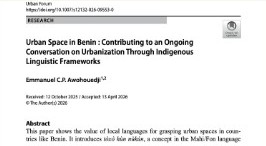

Research translation & fieldwork
Evidence Science in Practice
Translating spatial observations and academic papers into accessible, impactful insights across languages and regions.

Featured publication excerpt examining spatial dynamics, governance, and urban policy implementation.
Urban Forum · doi.org/10.1007/s12132-026-09553-0
Multilingual Critical Writing
Dr. Emmanuel Awohouedji conducts empirical urban research and produces essays, policy documents, and research translation series tailored for community members, non-governmental bodies, and municipal decision-makers.
Essays in English follow floods, waste, public space, and the distance between a finding and a decision.
En français, le travail suit le passage de l’article scientifique à la décision, et ce que la recherche perd quand elle ne voyage pas.
The Urban Forum paper introduces tɔxɔ hùn nùkún, a Mahi/Fon name for a city with open eyes, and asks what policy language misses when a city is already speaking.
Essays
-
Floods, cement, and the city that was already there.
What Benin’s floods can teach those who think urban history starts with concrete.
-
Threnody of the Left Out.
What is lost when mega-projects outrun the people and places they cross.
-
Urban change and language: a city with open eyes.
What policy language misses when a city is already speaking.
-
People and Places Index.
A toolkit for human-centred planning, action, and environmental work.
-
Waste management in Benin, now.
What changed since 2017, read from the ground.
-
Why research doesn’t always travel.
From the scientific article to a decision, through public engagement.
Selected publications
- 2026. Urban Space in Benin: Contributing to an Ongoing Conversation on Urbanization Through Indigenous Linguistic Frameworks. Urban Forum. DOI.
- 2025. A street called hope: urban masculinities and place-making in Benin’s age of revelation. PhD thesis, LSE. LSE Research Online.
- February 2025. Participation citoyenne et urbanisation à Abomey-Calavi, République du Bénin. Policy brief, CiAAF and LSE.
- ORCID 0009-0001-2693-1466 · LSE profile